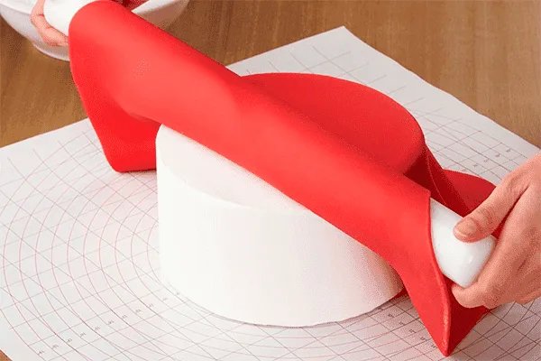
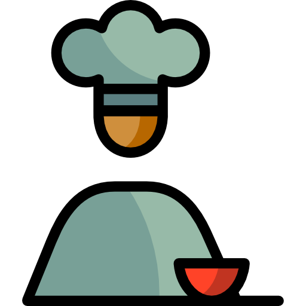
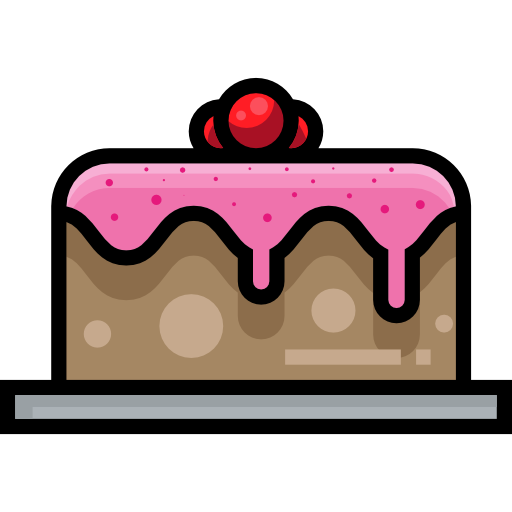
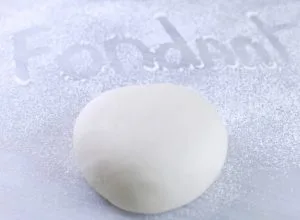
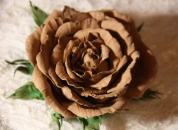
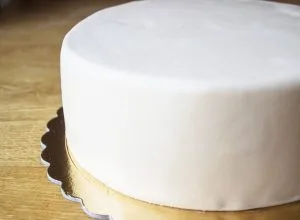
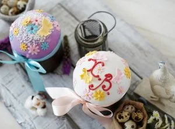
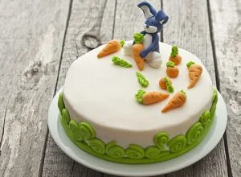

О Тортопедии
В Тортопедии мы собрали всю нужную информацию в одном месте. Здесь вы узнаете, как украсить торт мастикой и как приготовить массу для декора своими руками из простых и доступных продуктов. Увидите, как с ней работать, как лепить фигурки, даже если у вас нет инструментов для этого. Прочитаете, какие хитрости помогут сделать торт для любимого человека великолепным. В статьях на фото наглядно виден каждый шаг, поэтому у вас все получится.

Преимущества Тортопедии
Отсутствие скрытой рекламы в текстах и видео
Пошаговые мастер-классы по украшению тортов с фото и видео

Бесплатные уроки украшения тортов от профессионалов на русском и украинском

Проверенные уроки украшения тортов мастикой с видео и фото
Точные рецепты и действенные советы в помощь кондитерам
Знаете ли вы, что…
1. Сахарная мастика была изобретена в XVI веке и состояла из яичных белков, лимонного сока, сахара, розовой воды и особого ингредиента – загустителя тилозы. При этом готовой мастикой поливали торт, как глазурью. И только в XX веке она приобрела тот вид, который мы знаем сегодня.
2. В Великобритании принято отрезать кусочек свадебного торта и хранить его в герметичной жестяной коробке до рождения ребенка. Он настолько пропитан алкоголем, что не портится в течение многих лет.
3. 20 июля отмечается Международный день торта. Во время праздника дарят сладости друзьям и близким, подчеркивая свое отношение. Событие призвано активно распространять идеи добра и дружбы по всему миру.
4. Самый большой торт на планете весил 6818,4 кг. Его изготовил шеф-повар из Коннектикута, США, в 2004 году. Самый высокий торт в мире имел высоту около 33 метров. Его испекли студенты и сотрудники кулинарной школы в Джакарте, Индонезия, для празднования Нового года и Рождества.
5. Торты на день рождения стали дарить еще в 1785 году. Однако тогда небольшие десерты вручал именинник в качестве приглашения на праздник. А в XVII веке в Англии верили, что если незамужняя девушка положит под подушку кусочек торта (больше похожего на кекс), то она увидит своего суженого во сне.
Шесть популярныx рецептов
-
Как сделать сахарную мастику в домашних условиях: 8 отличных рецептов

- Как покрасить мастику красителем
-
4 проверенных рецепта шоколадной мастики

-
Как обтянуть торт мастикой из маршмеллоу – простой и понятный способ

-
Пасхальные фигурки из мастики: как слепить кролика, маленькие цветы и цыпленка

-
Как слепить зайку из мастики – два способа и множество фотографий
